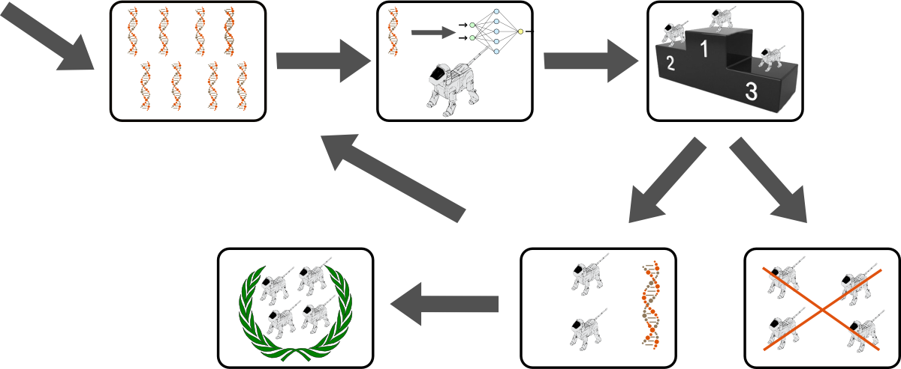
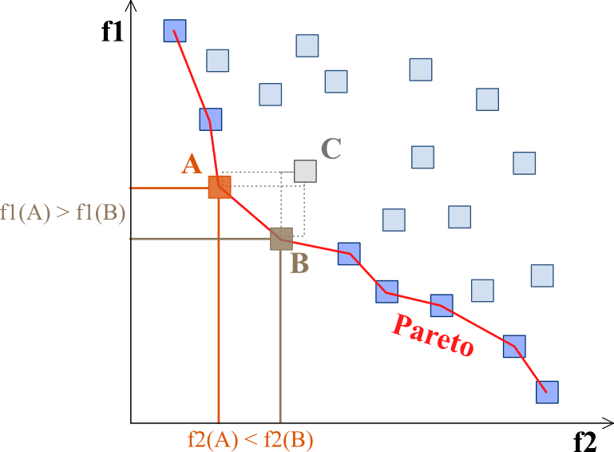
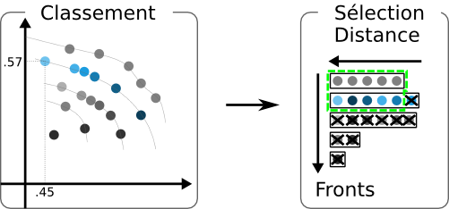

Les Algorithmes Evolutionnistes (ou évolutionnaires) (Eiben and Smith, 2003) sont des méta-heuristiques stochastiques d'optimisation globale, s'inspirant de la théorie de l'évolution. La souplesse d'utilisation de ces algorithmes pour des fonctions objectifs non régulières, à valeurs vectorielles, et définies sur des espaces de recherche non standard (e.g. espaces de listes, de graphes, ... ) permet leur utilisation pour des problèmes qui sont pour le moment hors d'atteinte des méthodes plus classiques.
Un problème d'optimisation globale peut se formaliser de cette manière :
| Trouver x* tel que f(x*) <= f(x), ∀ x ∈ S |
avec f comme fonction objectif et S l'espace de recherche.
Algorithme évolutionniste Optimisation individus solutions candidates population ensemble de solutions candidates fonction de fitness fonction objectif génération itération
Apparue dans les années 30, la théorie synthétique de l'évolution (ou néodarwinisme) (Mayr, 1942) intègre à la théorie darwinienne (Darwin, 1859), la théorie de l'hérédité mendelienne (Mendel, 1865) et la génétique des populations (Haldane, 1932).
Elle donne une explication des mécanismes de différenciation d'individus au sein d'une population ainsi que le principe de transmission de caractéristiques d'individus à leur descendance. Les caractéristiques d'un organisme sont en grande partie codées dans ses gènes, une séquence d'ADN différente pour chaque individu. Les sources de cette diversité sont des mutations pouvant apparaître dans ces gènes, ainsi que des recombinaisons (brassages génétiques) se produisant lors de la reproduction sexuée.
Les algorithmes évolutionnistes sont une abstraction du principe évoqué précédemment pouvant se résumer de la manière suivante :
Les algorithmes évolutionnistes (AE) ont des origines diverses : à la fin des années 1950, certains mécanismes d'évolution naturelle sont simulés via des programmes informatiques (Fraser, 1957). Une solution fonctionnelle fut proposée par John Holland en 1975, sous le nom d'algorithme génétique (Holland, 1975) dans le but de modéliser ces mécanismes. Ils ont été utilisés comme optimiseurs par (De Jong, 1975) et popularisés par Goldberg (Goldberg, 1989). Les stratégies d'évolution sont apparues en 1965 (Rechenberg, 1965,Rechenberg, 1973,Schwefel, 1981), les programmes évolutionnistes datent du début des années 1960 (Fogel, 1962,Fogel, 1991), alors que la programmation génétique est apparue plus récemment (Cramer, 1985,Koza, 1992). Ces différents AEs ont aujourd'hui en grande partie fusionné, car, comme l'a démontré (Michalewicz, 1994), le principe de ces algorithmes peut s'appliquer à toute représentation.
Le champ d'application des algorithmes évolutionnistes couvre, de nos jours, un spectre très large : d'applications réelles complexes comme le contrôle du flux de pipelines de gaz, le design de profils d'ailes d'avion, le routage aérien, la conception d'antennes (Hornby et al., 2011,Lohn et al., 2004) et la conception de filtres électroniques (Koza et al., 2003), à des problèmes plus théoriques et combinatoires, comme en théorie des jeux et en modélisation économique ou financière (Coello and Lamont, 2004).
Les AEs empruntent un vocabulaire quelque peu différent des méthodes d'optimisation classiques (cf. tableau 1.1 pour un comparatif des termes).
Avant de décrire les différents principes de ces algorithmes, il semble nécessaire de définir quelques notions.
Tous les AEs présentent les points communs suivants : ils manipulent une population d'individus, un individu peut subir des modifications aléatoires, un processus de sélection permet de déterminer quels individus conserver et quels individus rejeter.
Un individu se caractérise par son génotype qui peut avoir différentes représentations : "binaire" (G = 0, 1N) , "réelle" (G = [0, 1]N ou ℝN), ou sous forme de graphe. C'est dans cet espace génotypique que sont appliqués les différents opérateurs de variabilité : les mécanismes de recombinaisons et de mutations.
Les algorithmes évolutionnistes utilisent principalement la mutation ponctuelle comme illustré sur la figure 1.1. Par exemple, en supposant que le génotype soit une chaîne de bits, on peut définir pour chaque bit une probabilité d'inversion : le génotype de l'individu muté peut alors différer de celui de l'individu original de plusieurs bits.
L'opérateur de croisement dépend essentiellement du codage utilisé. Certains travaux semblent indiquer que l'utilisation d'un opérateur de croisement rend l'algorithme plus efficace vis-à-vis de l'optimisation (Jansen and Wegener, 1999), mais il demeure parfois difficile de définir un opérateur de croisement qui ait un sens pour le codage utilisé, par exemple dans le cas d'évolution de graphes (Eiben and Schippers, 1998,Stanley and Miikkulainen, 2002). Certains travaux se limitent à ne définir que des opérateurs de mutation (e.g. (Bäck et al., 1991,Mouret and Doncieux, 2012)).
Le génotype est ensuite décodé en phénotype afin d'être évalué. Par exemple, un graphe, représentant le génotype, peut être converti en un réseau de neurones, représentant le phénotype.

Voici le pseudo-code général d'un algorithme évolutionniste (cf. figure 1.2 pour un schéma récapitulatif) :
construction et évaluation d'une population initiale ; Jusqu'à atteindre un critère d'arrêt : sélection d'une partie de la population, reproduction des individus sélectionnés, mutation de la descendance, évaluation du degré d'adaptation de chaque individu, remplacement de la population initiale par une nouvelle population.
L'un des points clés d'un algorithme évolutionniste se situe dans le compromis entre explorer l'espace de recherche, afin d'éviter de stagner dans un optimum local, et exploiter les meilleurs individus obtenus, afin d'atteindre de meilleures valeurs aux alentours. Trop d'exploitation entraîne une convergence vers un optimum local, ou convergence prématurée, alors que trop d'exploration entraîne la non-convergence de l'algorithme.
Différentes méthodes de sélection des individus existent selon les algorithmes :
Certains parents sont remplacés par certains des enfants en fonction de leurs performances respectives. Les stratégies d'évolution (ES) n'utilisent que le remplacement, et non la sélection, pour biaiser la recherche. Dans les ES, le remplacement est déterministe et peut prendre deux formes, notées (µ,λ)-ES et (µ+λ)-ES. Dans le remplacement (µ,λ)-ES, les µ meilleurs individus parmi les λ enfants constituent la population suivante Pt+1 . Pt n'est pas conservée. Il est ainsi possible que le meilleur individu de la population t + 1 soit moins bon que le meilleur individu de la population t. Le remplacement (µ+λ)-ES construit Pt+1 en gardant les µ meilleurs individus de Pt et des λ enfants. Ainsi, si les meilleurs individus de Pt restent compétitifs par rapport aux enfants, ils seront conservés (c'est la propriété d'"élitisme").
Il existe de nombreux algorithmes évolutionnistes efficaces, comme la stratégie d'évolution avec adaptation de matrice de covariance (CMA-ES) (Hansen and Ostermeier, 2001,Hansen and Koumoutsakos, 2003) qui a été reconnue comme étant une des méthodes les plus performantes dans le cadre d'optimisation continue black box (Hansen et al., 2010).
Cependant, de nombreux problèmes ne peuvent être réduits à un seul objectif. Prenons le cas d'un aspirateur autonome. Celui-ci doit posséder une grande capacité d'aspiration, une bonne autonomie lui permettant d'explorer efficacement différentes pièces, tout en ayant un prix d'achat raisonnable. Cela nécessite d'optimiser plusieurs objectifs simultanément pouvant être contradictoires. Il y a donc plusieurs compromis plutôt qu'une solution optimale unique.
(Pareto, 1897) a formulé le concept suivant : dans un problème multiobjectif, il existe un équilibre tel que l'on ne peut pas améliorer un critère sans détériorer au moins un des autres critères. Cet équilibre a été défini comme l'optimum de Pareto.
Un point xi est dit Pareto-optimal s'il n'est dominé par aucun autre point.
Un front de Pareto est représenté sur la figure 1.3.

Figure 1.3: Sur la figure suivante, on cherche à minimiser les deux objectifs f1 et f2. Les solutions non dominées sont les points situés sur le front de Pareto, indiqué en rouge. Le point C n'est pas sur le front de Pareto parce qu'il est dominé par les points A et B (graphique issu de Wikipedia).
Nous pouvons distinguer 3 grandes classes de méthodes pour résoudre un problème multiobjectif :
Dans cette classe de méthodes, les différents objectifs sont regroupés en un seul pour être optimisés.
Cette méthode consiste à additionner tous les objectifs en leur affectant un coefficient de poids. Ce coefficient représente l'importance relative que le décideur attribue à l'objectif.
| minimise |
| wifi(x) avec wi ≤ 0 |
avec wi représentant le poids affecté au critère i et ∑i=1k wi = 1.
Cette méthode peut, en faisant varier les valeurs du vecteur poids w, retrouver l'ensemble de solutions supportées si le domaine réalisable est convexe. Cependant, elle ne permet pas de trouver les solutions enfermées dans une concavité (les solutions non supportées). Les résultats obtenus avec de telles méthodes dépendent fortement des paramètres choisis pour le vecteur de poids w. Les poids wi doivent également être choisis en fonction des préférences associées aux objectifs, ce qui est une tâche délicate. Une approche généralement utilisée consiste à répéter l'exécution de l'algorithme avec des vecteurs poids différents.
(Jin et al., 2001) ont proposé une agrégation dynamique des poids et (Kim and De Weck, 2006) ont présenté une méthode de somme pondérée adaptative.
Dans cette méthode, le décideur fixe un but Ti à atteindre pour chaque objectif fi (Charnes and Cooper, 1961). Ces valeurs sont ajoutées au problème comme des contraintes. La nouvelle fonction objectif est modifiée de façon à minimiser la somme des écarts entre les résultats et les buts à atteindre.
| min |
| |fi(x)−Ti| avec x ∈ F |
Ti représente la valeur à atteindre pour le ieme objectif.
Il minimise le maximum de l'écart relatif entre un objectif et son but associé par le décideur (Coello et al., 1995).
| min maxi | ⎛ ⎜ ⎜ ⎝ |
| ⎞ ⎟ ⎟ ⎠ | avec i, …, k |
avec Ti le but à atteindre pour le ieme objectif. avec wi le poids à un objectif.
Dans cette approche (Charnes and Cooper, 1957,Ijiri, 1965,Duckstein, 1981) le décideur spécifie l'ensemble des buts Ti qu'il souhaite atteindre et les poids associés wi. La solution optimale est trouvée en résolvant le problème suivant :
| minimiser α tel que Ti + α.wi >= fi(x) |
Les objectifs Ti représentent le point de départ de la recherche dans l'espace et les poids wi indiquent la direction de recherche dans l'espace.
Méthode basée sur la minimisation d'un objectif fi en considérant que les autres objectifs fj avec j ≠ i doivent être inférieurs à une valeur εj. En général, l'objectif choisi est celui que le décideur souhaite optimiser en priorité.
| minimiser fi(x) avec fj(x) ≤ εj, ∀ j ≠ i |
De cette manière, un problème simple objectif sous contraintes peut être résolu. Le décideur peut ensuite réitérer ce processus sur un objectif différent jusqu'à ce qu'il trouve une solution satisfaisante.
Il existe plusieurs inconvénients quant à l'utilisation de méthodes agrégées : la difficulté de déterminer les différents paramètres; elles nécessitent de nombreuses connaissances a priori, notamment lors de l'affectation d'un coefficient de poids à chaque objectif; il est de plus nécessaire d'effectuer de nombreux tests pour déterminer l'influence de chaque objectif.
Première extension d'un algorithme génétique simple pour la résolution d'un problème multiobjectif (Schaffer, 1984). La différence avec un algorithme génétique simple se situe au niveau de la sélection. Pour k objectifs et une population de n individus, une sélection de n/k individus est effectuée pour chaque objectif. k sous-populations seront créées contenant chacune les n/k meilleurs individus pour un objectif particulier. Les k sous-populations sont ensuite mélangées afin d'obtenir une nouvelle population de taille n.
(Fourman, 1985) Les objectifs sont préalablement rangés par ordre d'importance par le décideur (Fourman, 1985). L'optimum est ensuite obtenu en minimisant tout d'abord la fonction objectif la plus importante puis la deuxième et ainsi de suite.
La première utilisation de la dominance au sens de Pareto remonte à (Goldberg, 1989) pour résoudre des problèmes proposés par (Schaffer, 1984).
Résoudre un problème multi-objectifs consiste à converger le plus rapidement possible vers le front de Pareto (convergence), tout en gardant une bonne distribution des solutions sur le front de Pareto (dispersion).
Dans cette méthode (Fonseca and Fleming, 1993), chaque individu de la population est rangé en fonction du nombre d'individus qui le dominent. Par la suite une fonction de notation permet de prendre en compte le rang de l'individu et le nombre d'individus ayant le même rang. Les individus non dominés sont de rang 1. L'évaluation de la fitness de chaque individu s'effectue en calculant le rang de l'individu puis en affectant la fitness de chaque individu par application d'une fonction de changement d'échelle sur la valeur de son rang. Cette fonction est en général linéaire.
L'utilisation de la sélection par rang a tendance à répartir la population autour d'un même optimum ce qui n'est pas satisfaisant. Pour éviter cette dérive, les auteurs utilisent une fonction de partage. L'objectif est de répartir la population sur l'ensemble du front de Pareto.
La technique de partage agit sur l'espace des objectifs. Cela suppose que deux actions qui ont le même résultat dans l'espace des objectifs ne pourront pas être présentes dans la population. Cette méthode obtient des solutions de bonne qualité et son implémentation est facile. Cependant les performances dépendent de la valeur du paramètre utilisé dans la technique de partage.
Dans NSGA (Srinivas and Deb, 1994), le calcul de la fitness s'effectue en séparant la population en plusieurs groupes en fonction du degré de domination au sens de Pareto de chaque individu. L'algorithme se déroule ensuite comme un algorithme génétique classique. La sélection est basée sur le reste stochastique mais peut être utilisée avec d'autres heuristiques de sélection (tournoi, roulette pipée, etc.).
Cette méthode (Horn et al., 1994) utilise un tournoi basé sur la notion de dominance de Pareto. La comparaison se fait sur deux individus pris au hasard avec une sous-population de petite taille également choisie au hasard. Si un seul de ces deux individus domine la sous-population, il est alors positionné dans la population suivante. Dans les autres cas, une fonction de sharing est appliquée pour sélectionner l'individu.
Du fait de la non-conservation des individus Pareto-optimaux de génération en génération dans ces méthodes dites non-élitistes, la convergence vers le front de Pareto est lente. De plus, elles maintiennent difficilement de la diversité sur ce front de Pareto. Pour contrecarrer ces limitations, des méthodes dites "élitistes" se sont développées.
Cette méthode (Zitzler et al., 2001) utilise le concept de Pareto pour comparer les solutions. Une des caractéristiques de SPEA II est de maintenir un ensemble de solutions Pareto-optimales dans une archive. La fitness de chaque individu est calculée en fonction des solutions stockées dans celle-ci. De plus, toutes les solutions de l'archive participent à la sélection. Afin de maintenir une taille d'archive raisonnable, une méthode de clustering est utilisée visant à garder seulement les solutions les plus représentatives. Une nouvelle méthode de niche, basée sur Pareto, est utilisée afin de préserver la diversité. L'avantage essentiel est qu'elle n'exige pas de réglage de paramètres de sharing.
L'algorithme PAES (Knowles and Corne, 2000) est inspiré d'une stratégie d'évolution (1+1) (Rechenberg, 1973). Il n'est pas basé sur une population et n'utilise qu'un seul individu à la fois pour la recherche des solutions. Une population annexe de taille déterminée est utilisée afin de permettre de stocker les solutions temporairement Pareto-optimales. Si une nouvelle solution est non-dominée par un membre de l'archive, il est inclus dans l'archive, supprimant à cette occasion tous les membres qu'il domine. Si l'archive excède une taille maximum, l'acceptation d'une nouvelle solution est décidée par une mesure de densité basée sur une division en grille de l'espace des objectifs.
PESA (Corne et al., 2000) utilise une petite population interne et une population externe plus large. Une division en grille de l'espace des phénotypes est utilisée pour maintenir une diversité (application d'une mesure de densité) durant le processus. De plus, cette mesure de densité est utilisée pour permettre à des solutions d'être retenues dans une archive externe de la même manière que dans PAES (Knowles and Corne, 2000). La différence entre PESA et PESA-II (Corne et al., 2001), se situe au niveau de la sélection. La sélection se fait d'abord sur une zone. Un individu est ensuite sélectionné dans cette zone. Le but de cette approche étant de réduire le coût computationnel associé au classement de Pareto.
Outre la volonté d'assurer une bonne convergence vers le front de Pareto, ainsi qu'une bonne dispersion des solutions dans l'espace des objectifs, l'objectif de NSGA II (Deb et al., 2002) est de proposer un algorithme d'optimisation multi-objectifs rapide.
Une des caractéristiques de NSGA-II est d'introduire un classement des individus en plusieurs fronts successifs suivant la relation de dominance et de proposer également de sélectionner les solutions en fonction d'un critère de performance et de la densité de solutions dans leur voisinage.
À l'initialisation de l'algorithme, on génère une population de départ taille M.
Pour chaque génération de l'algorithme, les opérations suivantes sont effectuées :
La procédure de classement est illustrée par la figure 1.4 et l'algorithme de calcul de la distance de densité est fourni ci-dessous.

Figure 1.4: schéma expliquant le processus de sélection de NSGA-II. Le classement de la population se fait par fronts successifs et en fonction de la distance d'un individu à ses plus proches voisins sur un même front. Lors de la sélection, on conserve les meilleurs fronts et, lorsque la sélection se fait parmi les individus d'un même front, on sélectionne ceux qui sont les plus isolés sur le front.
l=|I|
pour chaque i de F:
définir I[i]=0
pour chaque objectif m de M:
classer F par rapport à l'objectif m
définir la distance des extrémités du front (i=0 et i=l) à la valeur max
pour i = 1 à l-1:
I[i]=I[i]+(Vm[i+1]-Vm[i-1])
avec i un individu du front de Pareto F, I[i] la mesure de densité pour l'individu i et Vm[i] correspond à la valeur de l'objectif m pour le point i.
Le processus de sélection par distance au sein d'un même front permet de favoriser les individus les plus éloignés les uns des autres tant qu'ils appartiennent à un même front. L'objectif est d'obtenir, à la convergence de l'algorithme, la quasi totalité de la population sur un seul front : le front des solutions Pareto optimales accessibles du problème. Une fois cette situation atteinte, la sélection se fait uniquement en fonction de la distance entre solutions, en vue de couvrir au mieux ce front.
Finalement, la sélection des individus pour la création d'une population fille Qt+1 à partir de la population Pt+1 se fait en utilisant un opérateur de tournoi basé sur la distance (“Crowded Tournament Selection Operator”) fourni dans la définition 13. Cet opérateur est appliqué entre n individus tirés au hasard dans la population Pt+1.
L'implémentation de l'algorithme, proposée initialement par Deb, a une complexité en O(MN2). Une implémentation de l'algorithme utilisant des arbres binaires pour le classement des solutions par fronts (Jensen, 2003) permet de réduire cette complexité à O(NlogM−1N), mais son implémentation est délicate si le nombre d'objectifs est supérieur à 2.
L'ε-MOEA (Laumanns et al., 2002,Deb et al., 2005) repose sur une version modifiée de la relation de dominance : l'ε-dominance (Laumanns et al., 2002,Grocsan and Oltean, 2004,Deb et al., 2005). Soit ε un vecteur quelconque de n réels strictement positifs, n étant le nombre d'objectifs optimisés, on dit que la solution x1 ε-domine la solution x2 si :
|
Avec l'ε-dominance, une solution domine toutes les solutions qui ne sont pas suffisamment meilleures qu'elle, sur au moins un objectif, c'est-à-dire si la différence sur un objectif ne dépasse pas la valeur εi correspondante. A noter que le front de Pareto ε-approché défini par la relation d'ε-dominance n'est pas unique.
La relation d'ε-dominance possède de bonnes propriétés théoriques (voir par exemple (Laumanns et al., 2002)). Elle assure notamment une bonne convergence et une bonne dispersion des solutions du front de Pareto ε-approché vis-à-vis du front de Pareto “exact” défini par la relation de dominance. Le front de Pareto ε-approché a également une taille bornée en fonction des valeurs d'ε utilisées.
L'algorithme ε-MOEA (Laumanns et al., 2002,Deb et al., 2005) utilise cette relation d'ε-dominance en plus de la relation de dominance classique. Il repose sur deux ensembles d'individus, une population et une archive contenant les solutions non-dominées trouvées. A chaque étape, deux parents sont sélectionnés, un dans la population et un dans l'archive, et sont utilisés pour générer deux enfants. Ces nouveaux individus sont ensuite intégrés à la population selon la relation classique de dominance et ajoutés à l'archive selon la relation d'ε-dominance. L'idée principale est d'assurer une bonne dispersion des solutions non-dominées dans l'espace des objectifs, en ne gardant que quelques solutions représentatives le long du front dans l'archive. Suivant les valeurs εi fixées pour chaque objectif, l'utilisateur peut ainsi intégrer de l'information dans le processus d'optimisation en indiquant l'écart sur chaque objectif à partir duquel deux solutions seront effectivement différentes de son point de vue (Laumanns et al., 2002).
L'algorithme ε-MOEA permet ainsi d'obtenir de bonnes performances en termes de convergence et de dispersion des solutions tout en ayant un coût computationnel moins élevé que SPEA et NSGA-II. Néanmoins, le choix des valeurs εi a une influence évidente sur l'approximation finale du front de Pareto. D'autre part, la densité de solutions peut également être variable le long du front et l'utilisation d'une constante εi par objectif risque d'entraîner un sous-échantillonnage de certaines zones par rapport à d'autres.
L'hypervolume (Zitzler and Thiele, 1999,Knowles, 2002) est un indicateur permettant de mesurer et comparer la qualité des solutions finales dans des algorithmes à base de population. Cet indicateur représente le volume d'espace à N dimensions dominé par une ou plusieurs solutions à un problème à N objectifs (voir figure 1.5). Il est calculé relativement à un point arbitraire facilement accessible et dominé. L'hypervolume couvert entre ce point et les points positionnés sur le front de Pareto de l'expérience représente l'hypervolume de ces solutions. L'ajout d'une solution non-dominée au front ajoute automatiquement de l'espace à l'hypervolume de ce front. L'indicateur d'hypervolume a été originellement proposé et employé comme mesure de performance pour comparer différents MOEA (Zitzler and Thiele, 1999). Il a par la suite été intégré dans le processus d'optimisation (Knowles, 2002). Dans ce cas, il décrivait une stratégie pour maintenir une archive séparée et bornée de solutions dominées basées sur cet indicateur.
L'hypervolume est le seul indicateur connu pour être strictement monotone en ce qui concerne la dominance de Pareto : à chaque fois qu'une approximation du front de Pareto domine entièrement un autre, alors la valeur de l'indicateur d'hypervolume sera plus grand (Bader and Zitzler, 2011).
De nombreux MOEA intègrent l'indicateur d'hypervolume durant le processus d'optimisation. Parmi eux nous pouvons noter : ESP (Huband et al., 2003), IBEA (Zitzler and Künzli, 2004) (en combinaison avec l'indicateur ε), SIBEA (Brockhoff and Zitzler, 2007), SMS-EMOA (Beume et al., 2007) ou HypE (Bader and Zitzler, 2011).
Une version mutli-objectifs de CMA-ES, MO-CMA-ES (Igel et al., 2007) a été développée. Le principe est le suivant : une population d'individus, qui adaptent leur stratégie de recherche comme dans CMA-ES, est maintenue. Pour la sélection, Les individus sont triés en fonction de leur niveau de non-dominance reprenant le même principe que dans NSGA-II. Afin de classer les individus qui ont le même niveau de dominance, deux critères sont considérés : la distance par densité de peuplement et l'hypervolume ajouté par l'individu.
La limitation liée Différentes implémentations ont été proposées pour tenter de réduire ce coût computationnel comme (Fonseca et al., 2006) basée sur une méthode "dimension-sweep" avec une complexité de O(Nn−2logN), (Beume and Rudolph, 2006) O(N logN + Nn/2), ou encore (Yang and Ding, 2007) qui décrit un algorithme avec une complexité de O((n/2)N).
D'autres méthodes ont été envisagées, comme automatiquement réduire le nombre d'objectifs (Brockhoff and Zitzler, 2007) ou approximer les valeurs de l'indicateur d'hypervolume en utilisant des méthodes de Monte Carlo (Everson and Fieldsend, 2002,Bader and Zitzler, 2011). L'idée principale dans le deuxième cas repose sur le fait que ce ne sont pas les valeurs de l'indicateur d'hypervolume qui sont importantes, mais plutôt le classement induit par cet indicateur.